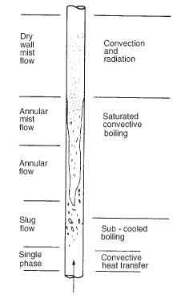
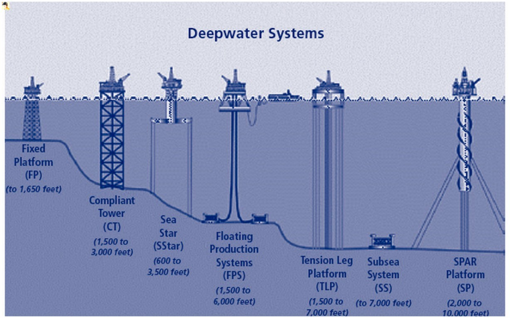

Multiphase flows are everywhere, one example is in boiling
fluids
(a two-phase gas-liquid flow we study later in heat transfer).
Steam is used to transfer heat in nearly every
industry, and it needs boilers to “raise” it.
We will see in later lectures that to
understand/predict
Forced boiling
, we require two-phase
corrections for the heat transfer coefficients.
\begin{align*}
h_{cb} = f_c h_{conv.} + f_s h_{nb}
\end{align*}
We needed to consider a parameter known as the
Lockhart-Martinelli parameter
,
$X_{tt}$
, to calculate these
corrections (
$f_c$
and
$f_s$
).

Forced boiling in a vertical tube.
In oil and gas, multiphase flow is a huge problem.
The fluid coming out of oil wells and passing through rigs
and pipelines are a mixture of gas, oil, water and other
chemicals.
This mixture is piped to shore in huge (100's km)
pipelines, to be treated at an onshore oil/gas plant.
Over a long enough pipeline, any multiphase flow will go
to
slug flow
.
When these “slugs” of liquid arrive at the oil and gas
terminal/plant, they can be enormous and need to be “caught” to
prevent them overwhelming the plant equipment.
Installation of a slugcatcher in Ireland. These pieces of
equipment exist to prevent slugs overwhelming the plant and to
separate the gas and liquid phases.
Slug flow is always problematic as it is unsteady-state,
oscillatory or intermittent flow, which is hard to design for.
With a long oil and gas pipeline we cannot always avoid
slug flow, but in smaller process equipment we might avoid it in
design, if we can predict the
flow pattern
!
In the oil and gas industry, pipeline simulation software
such as
olga
and
LedaFlow
are used to perform these
complex calculations for long pipelines.
But we can get an idea of the calculations they perform
and gain rough estimates for the flow pattern in a pipe using
empirical
flow pattern maps
.
The prediction of flow patterns first requires the
identification of certain flow regimes.
In multiphase flow in horizontal pipes, a common set
of flow regimes are identified to the right.
These patterns are identified by eye, or by some
measurement of the pressure fluctuations.
There are no hard and fast definitions, and many flow
types blend from one to another…
Bubble $\to$
Plug
$\to$
Slug
$\to$
Wavy
$\to$
Stratified
or Annular
$\to$
Spray.
Horizontal two-phase flow patterns, taken from
Coulson and Richardson Vol. 1.
Typically, Bubble, Plug and Slug flow are grouped
together as
Intermittent
flow.
This is because in these regions the flow of gas or
liquid is intermittent.
Obviously this regime of flow is difficult to design
with as there is no static equilibrium, and fluctuations must
be accommodated for (e.g., the slug catchers)
The “slugs” can even be dangerous, especially when
they “impact” upon bends or obstacles in the flow.
It is often desirable to aim for annular flow over the
range of expected flow rates in the pipe.
Horizontal two-phase flow patterns.
To estimate the flow pattern in a pipe, we need to use
a
flow pattern map
.
There are hundreds of these maps in existence, some
generalised to arbitrary fluids but most are for air/water
mixtures.
The axis of these graphs are usually functions of the
liquid (y-axis) and the gas (x-axis) flow rate.
The most common functions are the
superficial
velocities
\begin{align*}
u_L &= \frac{\dot{V}_{Liq.}}{A} &
u_G &= \frac{\dot{V}_{Gas}}{A}
\end{align*}
These are the velocities of each phase, calculated as
if they were flowing alone in the pipe.
Horizontal two-phase flow patterns.
Chhabra-Richardson flow map for flow in Horizontal Pipes.
The Chharbra-Richardson flow map can be used for a
wide range of pipes and corrections for the effect of
different fluid properties seems to be negligible.
The graph even appears to work well for gas and shear
thinning suspensions mixtures.
There is even suggestion that the map can be used for
vertical flow, but research in general has moved away from
graphical flow maps.
Chhabra-Richardson flow map for flow in Horizontal Pipes.
vertical flow, the principle flow patterns are much
simpler.
This is because gravity does not cause an asymmetric
separation.
Also, the dangers of intermittent flow are not as
severe, although oscillations can still occur.
The intermittent flow patterns are the slug and churn
flow.
Often, an annular flow pattern is desirable in
vertical flow as it minimises the pressure drop:
Vertical two-phase flow patterns.
vertical flows, the flow pattern maps are usually
expressed in terms of the mass flux (kg / m${}^2$
s).
\begin{align*}
G_L &= \frac{\rho_L \dot{V}_{Liq.}}{A} = \rho_L u_L \\ G_G
&= \frac{\rho_G \dot{V}_{Gas}}{A} = \rho_G u_G
\end{align*}
and the total mass flux is
$G=G_L+G_G$
.
The actual terms used in a popular vertical flow map,
the Hewitt-Roberts map, are the momentum fluxes
\begin{align*}
\frac{G_L^2}{\rho_L} &= \rho_L u_L^2 & \frac{G_G^2}{\rho_G}
&= \rho_G u_G^2
\end{align*}
Vertical two-phase flow patterns.
Vertical boiling is one of many cases of multiphase
flow, where every vertical flow pattern can be observed.
Another case might be bubbles coalescing as they rise
up a pipe (E.g., in a gas lift pump, see C&R, Vol.1,
Sec. 8.4.1).
Forced boiling in a vertical tube.
Turbulence is slightly more tricky in multiphase flows.
Each phase may be turbulent or laminar independently.
We then have to calculate a Reynolds number for each
phase.
This is easily done if we use the superficial velocities
\begin{align*}
\text{Re}_L &= \frac{\rho_L u_L D}{\mu_L} = \frac{G_L D}{\mu_L} &
\text{Re}_G &= \frac{\rho_G u_G D}{\mu_G} = \frac{G_G D}{\mu_G}
\end{align*}
The actual flow velocities will be higher than the
superficial velocities as the other phase occupies some of the
pipe.
As a result, the critical Reynolds number is typically
somewhere in the range of $1000\lesssim \text{Re}_{crit}\lesssim
2000$
.
If we want to calculate the pressure drop in a multi-phase
liquid, there are only a few times we might be able to do this
analytically
.
One example is the
Stratified flow
we studied in
tutorial 9!
But unfortunately, the more complex flow patterns are the
ones that typically occur in industrially relevant systems.
Another complication arises from the expansion of the gas
phase. As the pressure drops, the gas expands, which causes the
gas velocity to increase and this ends up accelerating the liquid
phase.
We will need to use empirical expressions to capture this
frictional pressure drop, and equations of state to capture the
expansion effects (compressible flow)…
Empirical multiphase correlations may be expressed in
terms of the Lockhart-Martinelli parameter.
\begin{align*}
X^2 = \frac{\left(\Delta p/L\right)_{liq.-only}}{\left(\Delta
p/L\right)_{gas-only}}
\end{align*}
This parameter is the ratio of the theoretical pressure
drops if each phase, with the same mass flow rate, was flowing
through the pipe on its own.
We calculate these pressure drops in the standard way,
for each phase
in pipes:
Calculate the Reynolds number.
Select the expression for the friction factor $C_f$
.
\begin{align*}
C_f&=16/Re & C_f&=0.079 \text{Re}^{-1/4}
\end{align*}
Use it in the Darcy-Wiesbach expression.
\begin{align*}
\frac{\Delta p}{L} = \frac{C_f \rho\left\langle v\right\rangle^2}{R}
\end{align*}
Once this is done for both phases, you can calculate the
Lockhart-Martinelli parameter!
But what can we do with $X$
, once we have it?
We can calculate so-called
multiphase multipliers
which allow the calculation of the two phase pressure drop.
\begin{align*}
\Delta p_{two-phase} = \Phi^2_{liq.} \Delta p_{liq.-only} = \Phi^2_{gas} \Delta p_{gas-only}
\end{align*}
The two phase multiplier $\Phi^2$
is calculated from
semi-empirical expressions, such as
Chisholm's relation
,
which take into account frictional pressure drop:
\begin{align*}
\Phi^2_{gas} &= 1 + c X + X^2 &\\
\Phi^2_{liq.} &= 1 + \frac{c}{X}+\frac{1}{X^2} &
c &= \begin{cases}
20& \text{turbulent liquid & turbulent gas}\\
12& \text{laminar liquid & turbulent gas}\\
10& \text{turbulent liquid & laminar gas}\\
5& \text{laminar liquid & laminar gas}
\end{cases}
\end{align*}
We can now calculate expressions for the pressure drop in
two-phase flow. The full procedure is
Calculate the Reynolds number for each phase.
Calculate the single-phase pressure drops$\Delta
p_{liq.-only}$
and
$\Delta p_{gas-only}$
.
Use Chisholm's relation to calculate either$\Phi^2_{liq.}$
or
$\Phi^2_{gas}$
.
Calculate the two-phase pressure drop!
We've found that we can calculate the
frictional
pressure drop
using the Lockhart-Martinelli parameter to work
out a two phase multiplier:
\begin{align*}
\Delta p_{two-phase} = \Phi^2_{liq.} \Delta p_{liq.-only} = \Phi^2_{gas} \Delta p_{gas-only}
\end{align*}
Friction is not the only mechanism by which pressure
energy may be lost. Another is through changes in the
hydrostatic head
.
\begin{align*}
\Delta p_{two-phase} = \Phi^2_{liq.} \Delta p_{liq.-only} +
\rho_{two-phase} g \Delta Y
\end{align*}
In vertical flows the hydrostatic pressure drop can be the
dominant contribution to the pressure drop.
In the offshore industry there can be a lot of height for
the multiphase well fluid to travel, even once it is out of the
ground…

Offshore platform depths.
To calculate the hydrostatic pressure loss
$\rho_{two-phase} g \Delta Y$
, we need the two-phase fluid
density.
If we knew the fraction of the pipe volume which is
occupied with liquid, $h$
, we could easily calculate the
multiphase density like so
\begin{align*}
\rho_{two-phase} = h \rho_L + (1-h) \rho_G
\end{align*}
The parameter is a $h$
as it is known as the
liquid
hold-up
.
$h$
, in segregated flow between plates, is proportional to
the height of occupied by the liquid (Fluid 2) phase:
This value can literally be worth millions when trying to
estimate the contents/inventory and performance of a long offshore
pipeline.
The simplest estimate we can come up with for the liquid
hold-up is the
no-slip
estimate.
We assume that the liquid and gas phases are stuck
together, so that the volumes occupied in the pipe are
proportional to the volumetric flowrates!
\begin{align*}
h = \dot{V}_L / \left(\dot{V}_L + \dot{V}_G\right)
\end{align*}
This is not realistic as the gas phase usually
bypasses
the liquid phase (in segregated flows, not so much in
bubble or plug flows).
For example, consider the two-phase laminar plate flow in
Tutorial 9 (and setting $1=L$
,
$2=G$
):
\begin{multline*}
\frac{\dot{V}_1}{\dot{V}_2} = -
\frac{3\mu_2}{\mu_1}\frac{H^3}{h^3}
\left[(1+A_1)\left(1-\frac{h}{H}\right)
-\frac{A_1}{2}\left(1-\frac{h^2}{H^2}\right)
-\frac{1}{3}\left(1-\frac{h^3}{H^3}\right)
\right]
\\
\times
\left[1+A_1\frac{3}{2}\frac{H}{h}\right]^{-1}
\end{multline*}
Except in simple cases like the one above, we usually need
to resort to empirical expressions for the hold-up.
All the usual caveats of empirical expressions apply to
the expressions given for the liquid hold-up.
There is no one-size fits all expression, experimental
data is often needed or specialist simulation packages like
Olga
or
LedaFlow
are used.
However, C&R Vol.1, pg. 186 provides us with one
expression to use by Farooqi and Richardson for co-current flows
of Newtonian fluids and air in horizontal pipes.
\begin{align*}
h &=
\begin{cases}
0.186+0.0191 X & 1 < X < 5\\
0.143 X^{0.42} & 5 < X < 50\\
1/\left(0.97 + 19/X\right) & 50 < X < 500
\end{cases}
\end{align*}
This allows the calculation of the two-phase density and
then the hydrostatic pressure loss which can then be added to the
frictional pressure drop.
\begin{align*}
\Delta p_{two-phase} = \rho_{two-phase} g \Delta Y +
\Phi^2_{liq.} \Delta p_{liq.-only}
\end{align*}
It should now be obvious why annular flow is desirable in
many cases as it yields the lowest pressure drop in vertical flow.
The liquid hold-up is at a minimum and so is the density
which gives the minimum hydrostatic pressure loss.
The liquid hold-up is also proportional to the cross
sectional area of the pipe occupied by fluid.
The area which is available for liquid flow is
$A_{L}=h A$
, and for gas flow is
$A_{G}=(1-h) A$
.
We can use the no-slip hold-up to calculate
no-slip
velocities
or the actual hold-up to calculate
actual-velocities
.
\begin{align*}
v_{L,no-slip} &= \dot{V}_L / (A h_{no-slip}) & v_{L,actual} &= \dot{V}_L / (A h_{actual})
\end{align*}
These improved estimates could be used to enforce a
maximum flow velocity to prevent wear/erosion or impact damage
etc.
One last, important consideration is that the gas in
multi-phase flow is
compressible
.
As the pressure drops the gas flow expands
, causing
the gas phase to accelerate. This implies that the flow pattern,
liquid hold up, and pressure drop will all change along the pipe.
We must be careful to consider compressible flow and
re-evaluate our pressure drop predictions along the length of the
pipe to compensate.
Analytical compressible flow is covered in detail in a
later course; however, you could always use finite difference
approaches to solve it!
Flow pattern maps, which patterns there are an which ones
are intermittent and which are desirable.
The Reynolds number is calculated for each phase
separately using the superficial velocity, and the turbulent
transition is around $1000\to2000$
.
We can calculate the Lockhart-Martinelli parameter and use
it to calculate a multiphase multiplier to work out the
frictional/accelerational pressure drop using emprircal
correlations.
The importance of the liquid hold up, the no-slip hold up
and the corresponding velocities.
The calculation of the multiphase density and the
hydrostatic pressure drop.